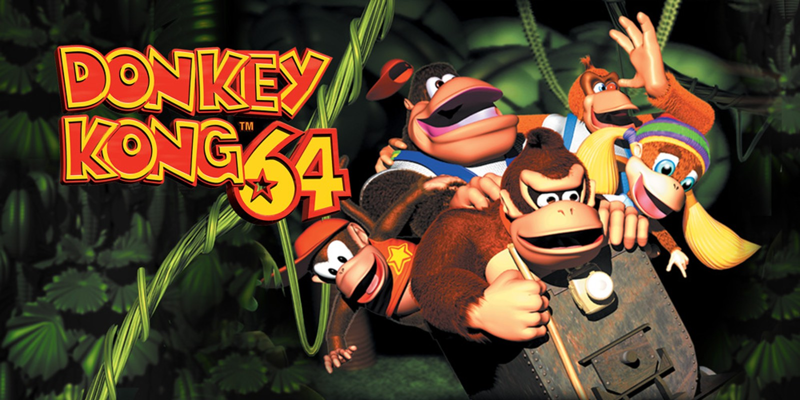

Donkey Kong 64
Donkey Kong 64 is een episch 3D-platformspel waarin Donkey Kong en zijn vrienden King K. Rool moeten stoppen door grote werelden te verkennen, puzzels op te lossen en krachtige vijanden te verslaan. In deze gids nemen we je mee door alle belangrijke aspecten van het spel, van personages tot levels en geheime trucs om je te helpen het spel te voltooien.
1. Beginnen met Donkey Kong 64
Bij het begin van het spel start je als Donkey Kong, maar al snel krijg je toegang tot andere speelbare personages, elk met unieke vaardigheden die nodig zijn om verschillende uitdagingen te overwinnen. Het doel van het spel is om Golden Bananas te verzamelen, bazen te verslaan en uiteindelijk King K. Rool te stoppen. Hier zijn enkele tips om goed van start te gaan:
- Verzamel Golden Bananas: Deze zijn cruciaal om nieuwe werelden te ontgrendelen. Elke wereld heeft een specifiek aantal bananen dat je moet verzamelen om verder te kunnen komen.
- Puzzels en mini-games: Los puzzels op en speel mini-games om belangrijke items te verdienen, zoals sleutels en nieuwe vaardigheden.
- Verken elke hoek: De werelden zijn groot en gevuld met geheimen. Neem de tijd om alles te verkennen en te zoeken naar verborgen voorwerpen.
2. Personages en Skills
In Donkey Kong 64 speel je niet alleen als Donkey Kong, maar ook als vier andere personages. Elk personage heeft unieke vaardigheden en wapens die nodig zijn om verder te komen in het spel. Hier is een overzicht van de speelbare personages:
- Donkey Kong: De leider van de groep, bekend om zijn kracht. Hij kan tonnen gooien, vijanden verpletteren en speciale hendels bedienen.
- Diddy Kong: Hij is snel en behendig. Met zijn jetpack kan hij vliegen, en zijn pistolen zijn handig voor het raken van verre doelen.
- Lanky Kong: Lanky is een clownachtige aap met lange armen, waardoor hij vijanden van een afstand kan raken. Hij kan ook zijn armen gebruiken om op bepaalde plaatsen te zweven.
- Tiny Kong: Ze kan krimpen om kleine ruimtes te betreden en gebruikt haar haar om in de lucht te zweven.
- Chunky Kong: Hij is de sterkste van allemaal. Chunky kan grote voorwerpen optillen en vijanden uitschakelen met zijn brute kracht.
3. Werelden en Omgevingen
Donkey Kong 64 bevat verschillende uitgestrekte werelden, elk met hun eigen unieke thema en uitdagingen. Hieronder volgen enkele van de belangrijkste werelden die je zult tegenkomen:
- Jungle Japes: Dit is de eerste wereld waar je begint. Een tropische jungle vol vijanden en puzzels.
- Angry Aztec: Een woestijnachtige omgeving met oude tempels en veel verborgen schatten.
- Frantic Factory: Een industriële wereld vol machines, met een uitdagend platformontwerp.
- Crystal Caves: Een ijzige wereld met gladde oppervlakken en moeilijke vijanden.
- Hideout Helm: De laatste wereld, waar je King K. Rool’s basis infiltreert en je klaar bent voor de eindstrijd.
4. Wapens en Items
Elk personage in Donkey Kong 64 heeft zijn eigen unieke wapens en items die cruciaal zijn om puzzels op te lossen en vijanden te verslaan. Hier zijn de belangrijkste items die je tegenkomt:
- Coconut Gun (Donkey Kong): Schiet kokosnoten op vijanden en objecten om obstakels te verwijderen.
- Peanut Popguns (Diddy Kong): Twee pistolen die snelle schade toebrengen aan vijanden.
- Grape Shooter (Lanky Kong): Een wapen dat druiven afvuurt en vooral handig is voor verre doelen.
- Feather Bow (Tiny Kong): Een boog die veren afvuurt, gebruikt om zwakke vijanden uit te schakelen en schakelaars te activeren.
- Pineapple Launcher (Chunky Kong): Een krachtig wapen dat ananassen afschiet, waarmee je grote schade kunt toebrengen.
5. Bossen en Gevechten
Elke wereld in Donkey Kong 64 heeft een eindbaas die je moet verslaan om verder te gaan. Deze gevechten vereisen vaak het gebruik van specifieke personages en hun vaardigheden om de baas te verslaan. Hier zijn enkele tips:
- Ken de zwaktes van de baas: Elke baas heeft een zwakte die je kunt uitbuiten, zoals het raken van specifieke delen van hun lichaam met wapens.
- Gebruik de juiste personages: Sommige bazen kunnen alleen verslagen worden door een specifiek personage en zijn unieke vaardigheden.
- Timing en precisie: Veel baasgevechten vereisen precisie in timing. Wacht op het juiste moment om aan te vallen.
Conclusie
Donkey Kong 64 is een gigantisch spel vol uitdagingen, geheime voorwerpen en een scala aan personages met unieke vaardigheden. Met deze gids ben je goed voorbereid om het spel te voltooien, alle Golden Bananas te verzamelen en uiteindelijk King K. Rool te verslaan. Veel succes!
Naar boven